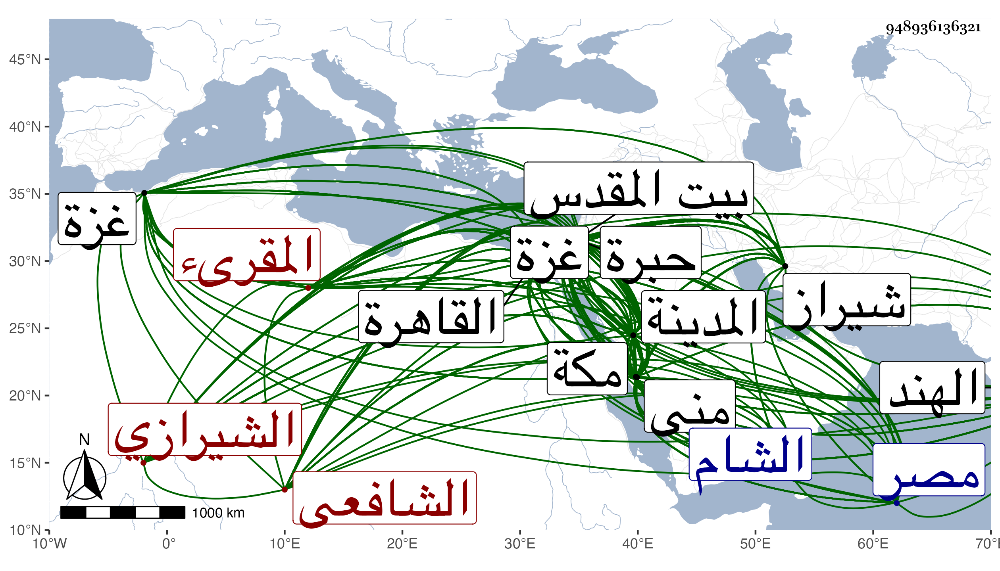

0902Sakhawi.DawLamic.ITO20230111-ara1.EIS1600.948936136321
Biography ID: 948936136321
552
حسين بن حسن بن حسين بن علي بن محمد بن حسن الغازي بن أحمد الجمال أبو محمد وكناه شيخنا أبو عبد الله بن الشرف الشيرازي المقرىء الشافعي نزيل الحرمين ويعرف بالفتحى بفاء ثم مثناة لكون جد والده فيما زعم بنى مسجدا بشيراز وسماه مسجد الفتح . ولد فيما أخبرني به في ذي الحجة سنة أربع عشرة وثمانمائة ثم قال لي بعد مدة أنه تحرر له في سنة عشر بشيراز وأن أمه أخبرته أن أباه حمله وهو جنين إلى الجنيد الكازروني البلياني فبرك عليه ودعا له ونشأ بها فحفظ القرآن وحفظ فيما قال أربعي النووي والشاطبيتين والدرة لابن الجزري والحاوي في الفقه والكافية والشافية كلاهما لابن الحاجب وطاف مع الوعاظ وقتا ثم أعرض عن ذلك وتلا به على ابن الجزري إلى أثناء سورة النحل فيما قال وهو ممكن ولزم إبراهيم بن محمد الخنجي الماضي وقرأ عليه أشياء منها مختصر الأذكار للنووي والتتمة عليه وذلك في سنة سبع وعشرين ووصفه بالولد المقرىء العابد الطالب الحاج واستمر معه حتى مات وكذا أخذ عن السيد بن الصفي والعفيف ابني السيد نور الدين الايجي واختص بهما ثم بينيهما من بعدهما وعن المولى قيام الدين محمد بن الغياث الكازروني قاضيها أحد من ناهز المائة ممن يرو عن سعيد الدين مسعود البلياني ونور الدين الايجي وغيرهما ، ولقي في المحرم سنة ست وثلاثين الشهاب أبا المجد عبد الله ابن ميمون الكيكي الكرماني عرف بشهاب الاسلام فأخذ عنه الأربعين لفضل الله التوربشتي وغيرها إجازة وحج في السنة التي تليها وأخذ فيها بمكة والمدينة عن جماعة ، وكان دخوله المدينة في يوم الاثنين سادس ذي القعدة فقرأ فيها على الجمال أبي البركات الكازروني بالروضة النبوية أشياء . وكذا على المحب المطري وأبي الفتح المراغي وعلى النجم السكاكيني تخميسه لكل من بانت سعاد والبردة مع أصلهما وثلاثيات البخاري والمسلسل بالمحمدين وغير ذلك ، وأجاز له النور على بن محمد المحلي سبط الزبير وفيها بمكة على الزين بن عياش بالعشر إلى رأس الحزب الأول من البقرة مع أماكن متعددة من الشاطبية وجميع منظومته غاية المطلوب في قراءة أبي جعفر وخلف ويعقوب بعد أن كتبها بخطه في أيام التشريق بمنى وأجاز له ووصفه بالشيخ الفاضل العالم ، وقرأ على أبي السعادات بن ظهيرة بعض البخاري بل سمع عليه بقراءة المحيوي عبد القادر الأنصاري المالكي أماكن مفرقة منه كل ذلك في رمضان منها ولقي الجمال محمد ابن إبراهيم بن أحمد المرشدي في أوائل ذي الحجة منها تجاه الكعبة فقرأ عليه الشاطبية والرائية وخطبة التيسير للداني وغيرها ، بل سمع من لفظه المسلسل بالأولية بشرطه ، وعاد إلى بلده فقرأ على العفيف محمد بن الشرف عبد الرحيم بن عبد الكريم الجرهي ثلاثيات البخاري وقطعة من الاستئذان منه والبردة وغير ذلك كالأربعين لابن الجزري الذي زعم أنه شيخه ولازمه كثيرا وسمع عليه الأربعين النووية في صفر سنة تسع وثلاثين بالجامع العتيق وغير ذلك بمشهد الحريصي كلاهما من شيراز وأجاز له وهو ممن يروي عن ابن صديق ، وتكرر له دخول الحرمين ومما قرأ على الجمال الكازروني بالروضة في جمادى الأولى سنة اثنتين وأربعين تساعيات العز بن جماعة الأربعين وتساعيات ابن الخشاب واليسير من الموطأ والكتب الستة ما عدا النسائي مع مناولتها وجميع الشفا ، وفي سنة سبع وأربعين جميع سنن الدارقطني وعلى المحب المطري في سنة اثنتين وخمسين من الصلاة في البخاري إلى الطلاق والسيرة النبوية لابن سيد الناس ودلائل النبوه للبيهقي ، وقبل ذلك في سنة خمسين بالروضة زوائد مسند أحمد جمع الهيثمي بسماعه لأكثر المسند على الجمال الحنبلي في القاهرة بقراءة المحب بن نصر الله وعجالة الراكب في ذكر أشرف المناقب للكمال أبي المعالي محمد بن علي بن الزملكاني بقراءته له على جده لأمه الزين أبي بكر بن الحسين المراغي بالروضة بقراءته له على العفيف المطري بسماعه له من لفظ مؤلفه بل سمع من لفظه الكثير من الترغيب للمنذري وعلى أبي الفتح المراغي في سنة اثنتين وأربعين سنن ابن ماجه بالمدينة وبعض البخاري والترمذي والشمائل والموطأ والمصابيح والترغيب مع مناولتها وجميع المجلس المعروف بفوائد الحاج والأول من مسلسلات العلائي بالروضة وفي سنة خمس وأربعين الترغيب وسنن أبي داود وأربعي النووي بمكة وفيها بمكة أيضا قرأ على التقي بن فهد سنن ابن ماجه وقصيدة كعب بن زهير مع قصتها من السيرة والبردة ، وأخذ بمكة أيضا عن الزين الاميوطي والمحب الطبري إمام المقام وأذن له في كتابة ما يكتبه للحمى ، وفي سنة خمس وأربعين قرأ بالمدينة على زينب ابنة اليافعي المسلسل بالأولية بطرقه وهو أولى حديث قرأه عليها وكتب بها عن الشمس محمد بن يوسف الزعيفريني شيئا من نظم أخيه الشهاب ، وكذا أخذ بها عن الشمس محمد الششتري ، وارتحل إلى الديار المصرية وقدم القاهرة في ربيع الثاني سنة ثلاث وأربعين فسمع بها على العلاء ابن خطيب الناصرية منتقى من مسند الحارث بن أبي أسامة بقراءة التقي القلقشندي والدعوات للمحاملي بقراءة ابن قمر بعد سماعه من لفظه للمسلسل ، وقرأ في التي تليها على المحب محمد بن نصر الله الحنبلي السنن الصغرى للنسائي وانتهى منها في صفرها بعد سماعه منه للمسلسل في السنة التي قبلها وعلى الزين الزركشي صحيح مسلم وعشرة أحاديث من تساعيات شيخه البياني وانتهى منه في ربيع الثاني سنة أربع وأربعين وعلى السيد النسابة قطعة من السنن الكبرى للنسائي في جمادى الأولى منها وعلى التاج الميموني رسالة الشافعي بقراءة القطب الخيضري وبقراءته هو الشاطبية في جمادى الآخرة منها وعلى العز بن الفرات تساعيات ابن جماعة واليسير من الأدب المفرد للبخاري في رمضانها وفيه على الشهاب السكندري الفاتحة وإلى المفلحون للسبعة وأجازه بالاقراء وكذا على الزين رضوان مع عمدة الاحكام بعد سماعه من لفظه للمسلسل ولبسه للخرقة الصوفية منه وعلى التقي المقريزي البعض من أول البخاري بعد أن حدثه في منزله بالمسلسل ، ورأيت المقريزي نقل عنه في ترجمة محمد بن الدمدكي من عقوده شيئا فقال ولما قدم على المقرىء المحدث الفاضل ونسبه الشيرازي الفقيه الشافعي سألته عنه فأخبرني أن جماعة يثق بهم حدثوه يعني بصفته ، وعلى الرشيدي البعض من سيرة ابن سيد الناس وعلى البرهان الصالحي الحنبلي السلماسيات وعلى الشهاب بن يعقوب المسلسل وجزء ابن زبان وجزء المؤمل وعلى الولوي السلطي بالطيبرسية المجاورة للأزهر الشفا وانتهى في ربيع الأول سنة ثمان وأربعين وسمع على الزين قاسم بن الكويك معنا جزء أبي الجهم بقراءة الديمي في ربيع الثاني سنة تسع وأربعين وفي رمضانها على الزين رجب الخيري جزء ابن مخلد بقراءة التقي القلقشندي ، وقرأ في شوالها على الزين شعبان ابن عم شيخنا سداسيات الرازي وفيها على العلم البلقيني جزء أبي الجهم والجمعة وسمع على الشمس البالسي وتجار البالسية وطائفة ، وسافر من القاهرة لزيارة بيت المقدس والخليل فدخل غزة في جمادى الآخرة سنة أربع وأربعين فكتب عن خطيب جامع الجاولي بها يوسف بن علي بن سالم خطبة سمعها منه حين تأديته لها ، ولقي في رجبها ببيت المقدس القاضي الشمس محمد ابن محمد بن عمر بن الأعسر فأجاز له وقرأ على الشمس محمد بن خليل المقرىء عرف بابن القباقبي شيخ القراء قصيدتين من نظمه واجتمع بشيخ الوقت وزاهده الشهاب بن رسلان في منزله الملاصق للمسجد الأقصى فأخذ عنه خرقة التصوف وحدثه بحديث من مسند الدارمي وعاد إلى القاهرة في منتصف شعبانها وأجاز له في استدعاء بخط ابن قمر مؤرخ برجب سنة خمس وأربعين ابن بردس وابن ناظر الصاحبة ومحمد بن يحيى الكناني الحنبلي في آخرين ، وقطن القاهرة مدة وفي إقامته بها ملازما لشيخنا بل كان هو قصده منها وكتب عنه في الأمالي وحصل جملة من تصانيفه وحمل عنه من مروياته ومؤلفاته أشياء بقراءته وقراءة غيره فمما قرأه من مروياته مسند الدارمي وعبد وسنن الدارقطني واليسير من الكتب الستة ومن الموطأ ومسند الشافعي والترغيب للاصبهاني وللمنذري وجميع جزء الجمعة للنسائي وجزء أبي الجهم والمورد الهنى في المولد السني لشيخه العراقي ومما سمعه منه الانتصار لامامي الأمصار ومشيخة قاضي المرستان ومسموعه من صحيح ابن خزيمة ونزهة الحفاظ لأبي موسى المديني وجزء من اسمه محمد وأحمد لابن بكير والأربعين الجهادية لابن عساكر والأربعين النووية ومجالس من أواخر الحلية لأبي نعيم ومجالس كثيرة من صحيح مسلم وبعض الخلاصة في علوم الحديث للطيبي وجميع الكفاية للخطيب بفوت يسير لابن سيد الناس وما قرأه من تصانيفه الأربعين المتباينة والخصال المكفرة وقصيدة من أول ديوانه وما سمعه منها توالي التأنيس في مناقب ابن إدريس وجزء المدلسين والأربعين التي خرجها لشيخه الزين المراغي بقراءة ابنه أبي الفرج وبعض بلوغ المرام وشرح النخبة وتخريج الكشاف ، وكان شيخنا يميل إليه كثيرا ولما انتقل شيخنا بمجلس إملائه لدار الحديث الكاملية قرأ في أول يوم سورة الصف بصوت شجى فأبكى الناس ووقع ذلك موقعا عظيما ورام بنو القاياتي الايقاع به فما تمكنوا ، وقدم القاهرة بعد شيخنا غير مرة وناله من الأمير أزبك الظاهري الجميل من تقريره وغيره لسبق معرفته له خصوصا في قدمته الأخيرة فإنه أقام في سنة ثمان وثمانين ببيت الخطابة من جامعه وكان قد كف وثقل سمعه ، وكذا سافر بأخرة إلى الشام فأخذ بها عن البرهان الباعوني والجرادقي وقطن مكة دهرا وسافر منها إلى الهند فحصل جملة ويقال إن الخلجي جعله شيخ الحديث بمدرسته التي أنشأها بمكة ولم يظهر ذلك ، واشتهر أنه باعه ثواب عمله المتطوع به من حج وعمره وغيرهما بمبلغ كبير على قول من يراه وربما أسمع الحديث بمكة والمدينة بل وبالقاهرة في قدماته المتأخرة . وهو إنسان ظريف كثير التودد والخبرة بمداخلة الناس شجى الصوت بالقرآن والحديث قرأ وطلب وبرع في القراءات وكتب بخطه الحسن كثيرا وحصل بغيره أشياء ولكن في نقله توقف وفي قراءته وخطه تصحيف وعنده جراءة وإقدام ولسان لا يتدبر ما يخرج منه قد صحبته قديما وسمعت على شيخنا بقراءته مسند عبد والمورد الهني وأشياء بل ونقلت عنه في ترجمة شيخنا ما عزوته إليه ، وكذا رأيت بخطه من نمط ذلك أشياء أودعتها بخطه حتى ألحقها وحصل من تصانيفي القول البديع وغيره وتناوله منى وكان يسألني عن أشياء ويزورني كثيرا حتى بعد أن كف وقرأ عليه أخي الأوسط بحضرتي الفاتحة وإلى المفلحون للسبع فرأيته ذاكرا للفن وكتب إلى مرة : وأحيى ذا المحيا الميمون بألوف التحايا سائلا من الله لكم صنوف المنح والعطايا إلى أن قال : وأنا والله كثير الفرح بوجودكم فإن العساكر المنصورة المحمدية قد قلت جدا ، وفارقته في موسم سنة أربع وتسعين بمكة وهو حي ، أغلب أوقاته عند أكبر أولاده ولسانه طويل وبدنه عليل ومع ذلك فجاء لتعزيتي بأخوي وبكى كثيرا ثم مات في المحرم سنة خمس وتسعين رحمه الله وإيانا .
